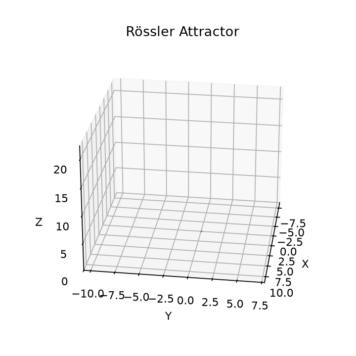
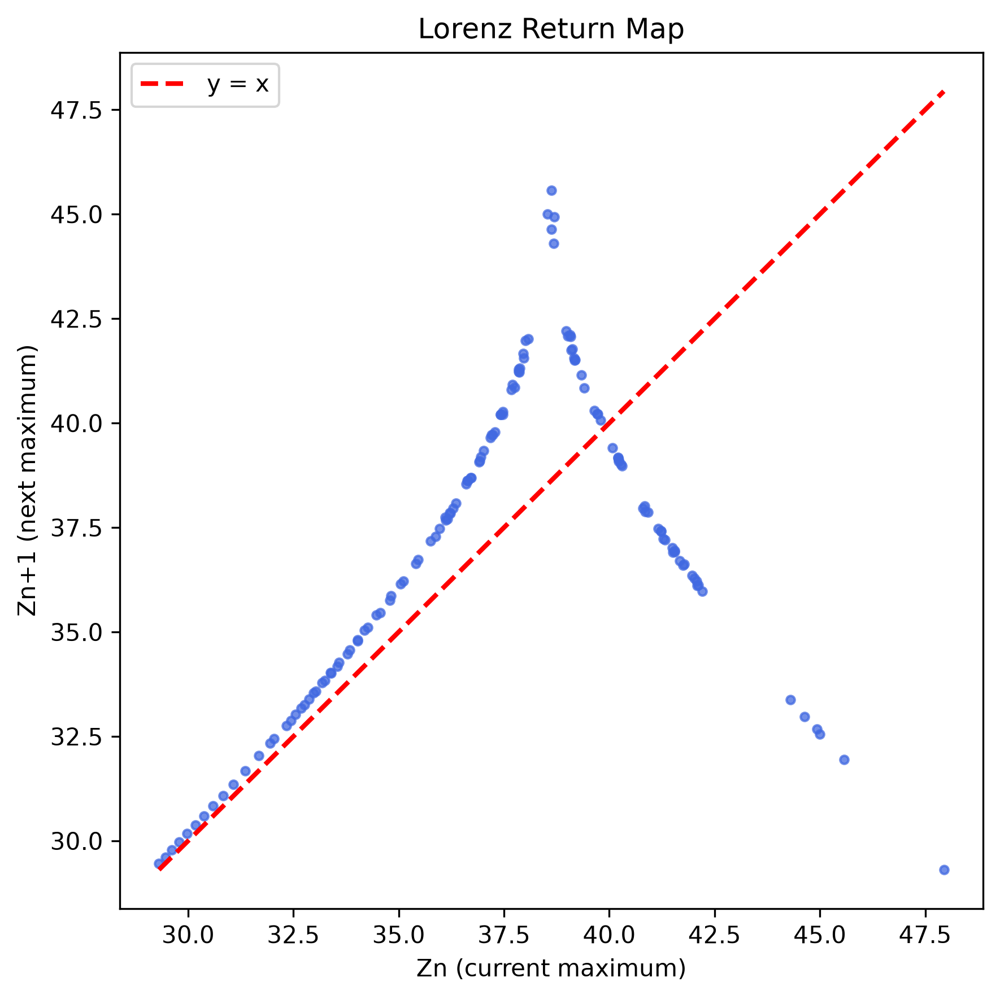

Projects

🌀 Rössler Attractor
Visualization of nonlinear dynamics and phase-space trajectories.

Nonlinear Dynamics • Computational Physics • Materials Research
Explore ProjectsHello! I'm a physics student passionate about nonlinear dynamics, condensed matter physics, optics, and computational simulations.
Visualization of nonlinear dynamics and phase-space trajectories.

A return map is a discrete representation of a continuous chaotic system. Here, each local maximum of the Lorenz z-variable is plotted against the following maximum (Zn versus Zn+1).

Scatter plot of successive maxima with the diagonal reference line y = x.
Instead of collapsing onto a single point, the maxima form a nonlinear curve, demonstrating deterministic chaos and the absence of simple periodic behavior.
GitHub: @princessjeanauburn